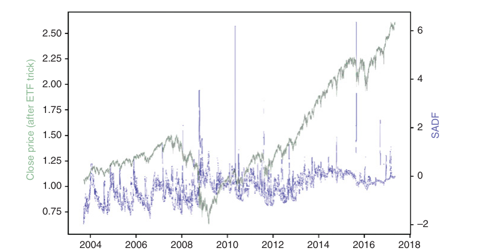
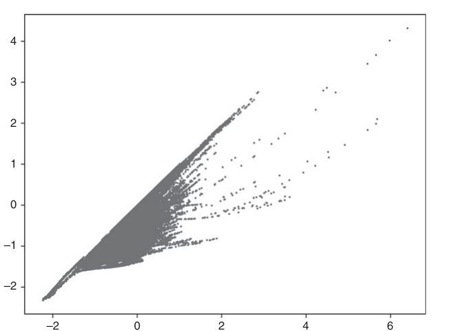
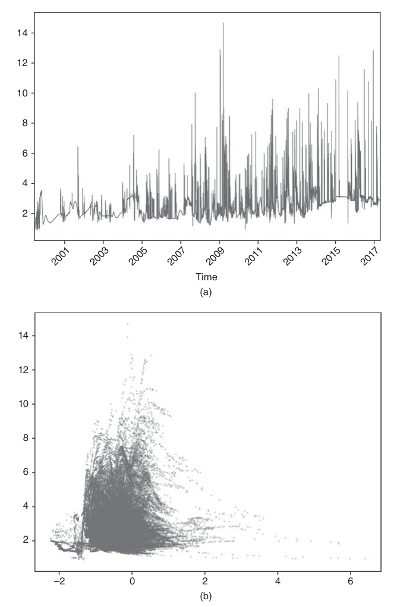

第四部分：实用的金融特征
结构突变
17.1 为什么要研究结构突变
开发机器学习投资策略时，我们通常希望等到多项因素同时指向同一结论、而且预期结果具有较高的风险调整后收益时再下注。结构突变——例如市场从一种状态切换到另一种状态——正是这类值得重点关注的机会。比如，原本均值回归的走势可能突然转为动量走势。切换发生时，大多数市场参与者往往毫无准备，因此会犯下代价高昂的错误。许多盈利策略正是利用了这种错误：处于亏损一方的人通常等到为时已晚才意识到判断有误。在真正认赔之前，他们可能不理性地死守仓位，期待行情反转；绝望时甚至还会加码亏损仓位。最终，他们不得不止损或因保证金不足而被强制平仓。结构突变往往能带来极具吸引力的风险收益比。本章将介绍几种衡量结构突变可能性的方法，以此构造有信息价值的特征。
17.2 结构突变检验的类型
结构突变检验大体可以分为两类：
- CUSUM（累积和）检验：检验累计预测误差是否显著偏离白噪声。
- 爆炸性检验：这类检验不只看过程是否偏离白噪声，还要判断它是否出现指数式上涨或崩塌。这样的走势既不符合随机游走，也不符合平稳过程，而且无法长期持续。
- 右尾单位根检验：在假定过程服从自回归模型的前提下，检验是否存在指数式上涨或崩塌。
- 次鞅／上鞅检验：在多种函数形式下检验是否存在指数式上涨或崩塌。
17.3 CUSUM 检验
第 2 章介绍过 CUSUM 滤波器，并将它用于按事件对价格柱采样。其思路是：当某个变量（例如累计预测误差）超过预设阈值时，就采样一个价格柱。这个思路还可以进一步扩展，用来检验结构突变。
17.3.1 基于递归残差的 Brown–Durbin–Evans CUSUM 检验
该检验由 Brown、Durbin 和 Evans 提出 [1975]。假设在每个观测时点 \(t=1,\ldots,T\)，都有一组特征 \(x_t\)，用来预测数值 \(y_t\)。矩阵 \(X_t\)由截至当前时点的特征序列构成（ \(t\le T\)，\(\{x_i\}_{i=1,\ldots,t}\)）。作者建议对参数 \(\beta\)按下列模型做递归最小二乘（RLS）估计：
在以下各个子样本上拟合该模型：\(([1,k+1],[1,k+2],\ldots,[1,T])\)，从而得到 \(T-k\)个最小二乘估计值 \((\hat{\beta}_{k+1},\ldots,\hat{\beta}_{T})\)。一步前瞻的标准化递归残差可按下式计算：
CUSUM 统计量定义为
原假设认为 \(\beta\)是一个不随时间变化的常数，即 \(H_0:\beta_t=\beta\)成立时，\(S_t\sim N[0,t-k-1]\)。需要注意的是，该方法的起点带有任意性，不同起点可能给出不一致的结果。
17.3.2 基于水平值的 Chu–Stinchcombe–White CUSUM 检验
该检验沿用 Homm 和 Breitung 的方法 [2012]。它删去特征集合 \(\{x_t\}_{t=1,\ldots,T}\)，并假设 \(H_0:\beta_t=0\)，也就是预测下一期不发生变化 \((\mathbb{E}_{t-1}[\Delta y_t]=0)\)。这样便可以直接使用 \(y_t\)的水平值，从而降低计算负担。对数价格 \(y_t\)相对于参考对数价格 \(y_n\)，\(t>n\)的标准化偏离量为
在原假设 \(H_0:\beta_t=0\)成立时，\(S_{n,t}\sim N[0,1]\)。单侧检验随时间变化的临界值为
作者通过蒙特卡洛模拟得到 \(b_{0.05}=4.6\)。该方法的一个缺点是，参考水平 \(y_n\)的设定带有一定任意性。为解决这个问题，可以在一系列向后移动的窗口上估计 \(S_{n,t}\)，这些窗口满足 \(n\in[1,t-1]\)，再取 \(S_t=\sup_{n\in[1,t-1]}\{S_{n,t}\}\)。
17.4 爆炸性检验
爆炸性检验通常分为单泡沫检验和多泡沫检验。这里的“泡沫”不只指价格暴涨，也包括价格暴跌。允许存在多个泡沫的检验更加稳健，因为“泡沫—破裂—再泡沫”的循环，在单泡沫检验看来可能会让序列显得平稳。Maddala 和 Kim [1998]以及 Breitung [2014]对相关文献作了很好的综述。
17.4.1 Chow 型 Dickey–Fuller 检验
一类爆炸性检验源于 Gregory Chow 的研究，最早可追溯到 Chow [1960]。考虑如下一阶自回归过程：
其中 \(\varepsilon_t\)是白噪声。原假设认为 \(y_t\)服从随机游走，即 \(H_0:\rho=1\)；备择假设则认为 \(y_t\)开始时服从随机游走，转为爆炸性过程的断点为 \(\tau^*T\)，其中 \(\tau^*\in(0,1)\)：
在时点 \(T\)，可以检验序列是否曾在时点 \(\tau^*T\) （断点日期）从随机游走切换为爆炸性过程。为检验这一假设，拟合下列模型：
其中 \(D_t[\tau^*]\)是虚拟变量；当 \(t<\tau^*T\)时取 0，当 \(t\ge\tau^*T\)时取 1。然后检验原假设 \(H_0:\delta=0\)与单侧备择假设 \(H_1:\delta>0\)：
该方法的主要缺点是 \(\tau^*\)未知。为解决这个问题，Andrews [1993]提出一种新检验：遍历所有可能的 \(\tau^*\)，但将其限制在区间 \(\tau^*\in[\tau_0,1-\tau_0]\)内。正如 Breitung [2014]所解释的，应排除样本开头和结尾附近的一部分候选 \(\tau^*\)，以确保两个状态都有足够的观测值用于拟合（也就是说，虚拟变量 \(D_t[\tau^*]\)中必须同时有足够多的 0 和 1）。当 \(\tau^*\)未知时，最终检验统计量取全部 \(T(1-2\tau_0)\)个候选断点所对应统计量中的最大值。每个候选统计量为 \(DFC_{\tau^*}\)。
Chow 方法的另一个缺点是，它假定只有一个断点日期 \(\tau^*T\)，而且泡沫会一直持续到样本末尾，不会再切换回随机游走。如果存在三个或更多状态（随机游走 \(\to\)泡沫 \(\to\)随机游走 \(\ldots\)），就需要使用增广 Dickey–Fuller 上确界（SADF）检验。
17.4.2 增广 Dickey–Fuller 上确界检验
用 Phillips、Wu 和 Yu 的话说 [2011]：“标准的单位根检验和协整检验不适合用来识别泡沫，因为它们无法有效区分平稳过程与周期性崩塌的泡沫模型。数据中周期性崩塌的泡沫形态，看起来更像由单位根过程或平稳自回归过程生成的数据，而不像潜在的爆炸性过程。”为弥补这一缺陷，作者提出拟合下列回归模型：
检验的假设为 \(H_0:\beta\le0\)，\(H_1:\beta>0\)。受 Andrews [1993]、Phillips 和 Yu [2011]以及 Phillips、Wu 和 Yu [2011]的启发，他们提出了增广 Dickey–Fuller 上确界（SADF）检验。

SADF 在每个终点 \(t\)固定右端，并让起点逐步向过去扩展，拟合上述回归后计算
其中 \(\hat{\beta}_{t_0,t}\)通过一个样本估计，该样本起点为 \(t_0\)，终点为 \(t\)，\(\tau\)是分析所用的最小样本长度；\(t_0\)是向后扩展窗口的左边界，并且 \(t=\tau,\ldots,T\)。估计 \(SADF_t\)时，窗口右端固定在 \(t\)。标准 ADF 检验是下面这个统计量的一种特殊情形：\(SADF_t\)，其中 \(\tau=t-1\)。接下来比较 \(SADF_t\)与 \(SDFC\)的两个关键区别。第一，\(SADF_t\)在每一个 \(t\in[\tau,T]\)处都要计算，而 SDFC 只在 \(T\)处计算。第二，SADF 不引入虚拟变量，而是递归地把样本起点向前扩展（\(t_0\in[1,t-\tau]\)）。通过嵌套双重循环遍历 \((t_0,t)\)的所有组合，SADF 无须预先假定状态切换次数或断点日期。图 17.1 展示了用 ETF 技巧（见第 2 章第 2.4.1 节）处理后的 E-mini 标普 500 期货价格序列，以及由该价格序列算出的 SADF。当价格呈现泡沫式走势时，SADF 曲线会出现尖峰；泡沫破裂后，它又会回落到较低水平。下面几节将讨论对 Phillips 原始 SADF 方法的若干改进。
17.4.2.1 原始价格与对数价格
文献中经常直接对原始价格做结构突变检验。本节说明为何更应采用对数价格，尤其是在处理包含泡沫形成与破裂的长时间序列时。
对于原始价格 \(\{y_t\}\)，若拒绝 ADF 的原假设，就意味着价格平稳且方差有限。由此推得，收益率 \(\frac{y_t}{y_{t-1}}-1\)并非时间不变：为了让价格方差保持恒定，价格越高，收益率波动就必须越小；价格越低，收益率波动就必须越大。因此，对原始价格运行 ADF，等于假定收益率方差会随价格水平改变。如果实际收益率方差与价格水平无关，该模型就会从结构上产生异方差。
相比之下，若使用对数价格，ADF 模型写成
作变量变换 \(x_t=ky_t\)。此时 \(\log[x_t]=\log[k]+\log[y_t]\)，ADF 模型于是写成
在这种基于对数价格的模型中，价格水平影响的是收益率均值，而不是收益率波动率。小样本下 \(k\approx1\)时，这一区别在实践中也许不大；但 SADF 的回归跨度可能长达数十年，而泡沫会让不同状态下的价格水平相差很大（\(k\ne1\)）。
17.4.2.2 计算复杂度
该算法的时间复杂度为 \(\mathcal{O}(n^2)\)。设总样本长度为 \(T\)，可得
把 ADF 模型写成矩阵形式，其中 \(X\in\mathbb{R}^{T\times N}\)与 \(y\in\mathbb{R}^{T\times1}\)。求解一次 ADF 回归所需的浮点运算次数（FLOPs）见表 17.1。
因此，每次 ADF 估计总共需要 \(f(N,T)=N^3+N^2(2T+3)+N(4T-1)+2T+2\)次浮点运算。更新一个时点的 SADF 需要 \(g(N,T,\tau)=\sum_{t=\tau}^{T}f(N,t)+T-\tau\)次浮点运算（其中另有\(T-\tau\)次运算用于寻找最大的 ADF 统计量）；估计完整 SADF 序列则需要 \(\sum_{t=\tau}^{T}g(N,t,\tau)\)。
以 E-mini 标普 500 期货的美元成交额柱序列为例。当 \((T,N)=(356631,3)\)时，一次 ADF 估计需要 11,412,245 次浮点运算，一次 SADF 更新需要 2,034,979,648,799 次运算，约为 \(2.035\) TFLOPs。完整 SADF 时间序列需要 241,910,974,617,448,672 次运算，约 242 PFLOPs。随着 \(T\)继续增大，运算量还会迅速上升。而且，上述估算尚未计入对齐、数据预处理、输入输出等公认耗时的工作。显然，这个双重循环的计算量极大。要在合理时间内估计 SADF 序列，可能需要在高性能计算（HPC）集群上高效并行执行。第 20 章将介绍适用于此类情形的并行化策略。
| 矩阵运算 | 浮点运算次数 |
|---|---|
| \(o_1=X^\prime y\) | \((2T-1)N\) |
| \(o_2=X^\prime X\) | \((2T-1)N^2\) |
| \(o_3=o_2^{-1}\) | \(N^3+N^2+N\) |
| \(o_4=o_3o_1\) | \(2N^2-N\) |
| \(o_5=y-Xo_4\) | \(T+(2N-1)T\) |
| \(o_6=o_5^\prime o_5\) | \(2T-1\) |
| \(o_7=o_3o_6\frac{1}{T-N}\) | \(2+N^2\) |
| \(o_8=\frac{o_4[0,0]}{\sqrt{o_7[0,0]}}\) | \(1\) |
17.4.2.3 出现指数型走势的条件
考虑对数价格的零滞后模型：\(\Delta\log[y_t]=\alpha+\beta\log[y_{t-1}]+\varepsilon_t\)。它可改写为 \(\log[\tilde y_t]=(1+\beta)\log[\tilde y_{t-1}]+\varepsilon_t\)，其中 \(\log[\tilde y_t]=\log[y_t]+\frac{\alpha}{\beta}\)。向前回推 \(t\)个离散步长，可得 \(\mathbb{E}[\log[\tilde y_t]]=(1+\beta)^t\log[\tilde y_0]\)，即 \(\mathbb{E}[\log[y_t]]=-\frac{\alpha}{\beta}+(1+\beta)^t\left(\log[y_0]+\frac{\alpha}{\beta}\right)\)。可以在任一给定时点把索引 \(t\)重新置零，从而预测 \(y_0\to y_t\)在接下来的 \(t\)步内从初值演变到未来值的轨迹。由此可得到该动态系统三种状态的判定条件：
- 稳定状态： \(-2<\beta<0\Rightarrow\lim_{t\to\infty}\mathbb{E}[\log[y_t]]=-\frac{\alpha}{\beta}\)。
- 偏离均衡的幅度为 \(\log[y_t]-\left(-\frac{\alpha}{\beta}\right)=\log[\tilde y_t]\)。
- 当 \(-1<\beta<0\)，\(\frac{\mathbb{E}[\log[\tilde y_t]]}{\log[\tilde y_0]}=(1+\beta)^t=\frac{1}{2}\)这一比例在 \(t=-\frac{\log[2]}{\log[1+\beta]}\)处降至一半，这就是半衰期。
- 单位根状态： \(\beta=0\)。此时系统非平稳，并表现为鞅。
- 爆炸状态： \(\beta>0\)，其中\[\lim_{t\to\infty}\mathbb{E}[\log[y_t]]=\begin{cases}-\infty,&\log[y_0]<-\frac{\alpha}{\beta},\\+\infty,&\log[y_0]>-\frac{\alpha}{\beta}.\end{cases}\]
17.4.2.4 分位数 ADF
SADF 取一系列 t 统计量的上确界，即 \(SADF_t=\sup_{t_0\in[1,t-\tau]}\{ADF_{t_0,t}\}\)。直接选取极值会带来稳健性问题：采样频率或具体采样时点稍有变化，SADF 估计就可能大幅波动。可按以下步骤构造更稳健的 ADF 极值估计量。第一步，令 \(s_t=\{ADF_{t_0,t}\}_{t_0\in[1,t-\tau]}\)。第二步，定义 \(Q_{t,q}=Q[s_t,q]\)为 \(q\)分位数，样本来自 \(s_t\)；该指标用来衡量较高 ADF 值的集中位置，其中 \(q\in[0,1]\)。第三步，定义 \(\dot Q_{t,q,v}=Q_{t,q+v}-Q_{t,q-v}\)，其中 \(0<v\le\min\{q,1-q\}\)，用它衡量较高 ADF 值的离散程度。例如，可设 \(q=0.95\)与 \(v=0.025\)。
注意，SADF 只是 QADF 的一个特例，此时 \(SADF_t=Q_{t,1}\)与 \(\dot Q_{t,q,v}\)没有定义，因为 \(q=1\)。
17.4.2.5 条件 ADF
还可以通过计算条件矩来改善 SADF 的稳健性。令 \(f[x]\)为下列集合的概率分布函数：\(s_t=\{ADF_{t_0,t}\}_{t_0\in[1,t-\tau]}\)，其中 \(x\in s_t\)。然后定义
分别衡量较高 ADF 值的集中位置和离散程度，归一化常数为 \(K=\int_{Q_{t,q}}^{\infty}f[x]\,dx\)。例如，可以取 \(q=0.95\)。
根据定义，\(C_{t,q}\le SADF_t\)。把 \(SADF_t\)相对于 \(C_{t,q}\)作散点图，可以看到这条下边界表现为一条斜率约等于 1 的上升直线（见图 17.2）。当 SADF 超过 \(-1.5\)后，图中会出现一些横向轨迹，这与集合 \(s_t\)的右侧肥尾突然变宽一致。换言之，\((SADF_t-C_{t,q})/\dot C_{t,q}\)即使 \(C_{t,q}\)相对较小，也可能取得非常大的值，因为 \(SADF_t\)对离群值很敏感。
图 17.3(a) 绘出了 \((SADF_t-C_{t,q})/\dot C_{t,q}\)在 E-mini 标普 500 期货价格序列上的时间变化。图 17.3(b) 则是 \((SADF_t-C_{t,q})/\dot C_{t,q}\)相对于 \(SADF_t\)的散点图，同样基于 E-mini 标普 500 期货价格计算。结果表明，集合 \(s_t\)中的离群值会使 \(SADF_t\)产生向上偏差。


17.4.2.6 SADF 的实现
本节给出 SADF 算法的一种实现。这段代码的目的不是追求计算速度，而是讲清 SADF 的估计步骤。代码清单 17.1 给出了 SADF 的内层循环，也就是估计下式的部分：\(SADF_t=\sup_{t_0\in[1,t-\tau]}\left\{\frac{\hat{\beta}_{t_0,t}}{\hat{\sigma}_{\beta_{t_0,t}}}\right\}\)。这对应算法中不断把起点向后移动的内层循环。未列出的外层循环则依次推进终点 \(t\)，\(\{SADF_t\}_{t=1,\ldots,T}\)就是逐点得到的完整 SADF 序列。各参数含义如下：
logP：包含对数价格的 pandas SeriesminSL：最小样本长度（\(\tau\)），也就是最后一次回归所用的样本长度constant：回归中的确定性项'nc'：既无常数项，也无时间趋势'c'：只有常数项'ct'：常数项加线性时间趋势'ctt'：常数项加二次多项式时间趋势
lags：ADF 模型使用的滞后阶数
def get_bsadf(logP,minSL,constant,lags):
y,x=getYX(logP,constant=constant,lags=lags)
startPoints,bsadf,allADF=range(0,y.shape[0]+lags-minSL+1),None,[]
for start in startPoints:
y_,x_=y[start:],x[start:]
bMean_,bStd_=getBetas(y_,x_)
bMean_,bStd_=bMean_[0,0],bStd_[0,0]**.5
allADF.append(bMean_/bStd_)
if allADF[-1]>bsadf:
bsadf=allADF[-1]
out={'Time':logP.index[-1],'gsadf':bsadf}
return out代码清单 17.2 给出了函数 getYX，它负责准备递归检验所需的 NumPy 对象。
def getYX(series,constant,lags):
series_=series.diff().dropna()
x=lagDF(series_,lags).dropna()
x.iloc[:,0]=series.values[-x.shape[0]-1:-1,0] # lagged level
y=series_.iloc[-x.shape[0]:].values
if constant!='nc':
x=np.append(x,np.ones((x.shape[0],1)),axis=1)
if constant[:2]=='ct':
trend=np.arange(x.shape[0]).reshape(-1,1)
x=np.append(x,trend,axis=1)
if constant=='ctt':
x=np.append(x,trend**2,axis=1)
return y,x代码清单 17.3 给出了 lagDF 函数，它会把参数 lags 指定的各个滞后应用到 DataFrame。
def lagDF(df0,lags):
df1=pd.DataFrame()
if isinstance(lags,int):
lags=range(lags+1)
else:
lags=[int(lag) for lag in lags]
for lag in lags:
df_=df0.shift(lag).copy(deep=True)
df_.columns=[str(i)+'_'+str(lag) for i in df_.columns]
df1=df1.join(df_,how='outer')
return df1最后，代码清单 17.4 给出了真正执行回归的 getBetas 函数。
def getBetas(y,x):
xy=np.dot(x.T,y)
xx=np.dot(x.T,x)
xxinv=np.linalg.inv(xx)
bMean=np.dot(xxinv,xy)
err=y-np.dot(x,bMean)
bVar=np.dot(err.T,err)/(x.shape[0]-x.shape[1])*xxinv
return bMean,bVar17.4.3 次鞅与上鞅检验
本节介绍不依赖标准 ADF 模型的爆炸性检验。考虑一个次鞅或上鞅过程。给定观测序列 \(\{y_t\}\)，我们要在假设 \(H_0:\beta=0\)，\(H_1:\beta\ne0\)下，检验是否存在爆炸性时间趋势。可以采用以下几种模型：
多项式趋势（SM-Poly1）：
多项式趋势（SM-Poly2）：
指数趋势（SM-Exp）：
幂函数趋势（SM-Power）：
与 SADF 类似，对每一个终点 \(t=\tau,\ldots,T\)，让起点不断向过去扩展，拟合上述任一模型，然后计算
这里取绝对值，是因为我们同样关心爆炸式上涨和爆炸式下跌。在一元回归中（Greene [2008]，第 48 页），考察参数 \(\beta\)，可得
因此 \(\lim_{t\to\infty}\hat{\sigma}_{\beta_{t_0,t}}=0\)。这个结论也可以推广到多元线性回归（Greene [2008]，第 51—52 页）。一个持续时间较长但强度较弱的泡沫，其 \(\hat{\sigma}_{\beta}^{2}\)可能小于一个持续时间较短但强度较高的泡沫的 \(\hat{\sigma}_{\beta}^{2}\)，使该方法偏向识别长期泡沫。为修正这种偏差，可以通过系数 \(\varphi\in[0,1]\)对较长样本施加惩罚，并选择能给出最佳爆炸性信号的系数值。
例如，当 \(\varphi=0.5\)时，在一元回归情形下，恰好可以补偿长样本带来的较低 \(\hat{\sigma}_{\beta_{t_0,t}}\)。随着 \(\varphi\to0\)，\(SMT_t\)会呈现更长的趋势，因为补偿作用逐渐减弱，长期泡沫会掩盖短期泡沫。随着 \(\varphi\to1\)，\(SMT_t\)会变得更嘈杂，因为被选中的短期泡沫会多于长期泡沫。因此，调节这个参数可以自然地调整爆炸性信号，使其筛选出适合特定持有期的机会。机器学习算法使用的特征可以包括 \(SMT_t\)在多个不同 \(\varphi\)取值下得到的估计。
参考文献
- Andrews, D. (1993): “Tests for parameter instability and structural change with unknown change point.” Econometrics, Vol. 61, No. 4 (July), pp. 821–856.
- Breitung, J. and R. Kruse (2013): “When Bubbles Burst: Econometric Tests Based on Structural Breaks.” Statistical Papers, Vol. 54, pp. 911–930.
- Breitung, J. (2014): “Econometric tests for speculative bubbles.” Bonn Journal of Economics, Vol. 3, No. 1, pp. 113–127.
- Brown, R.L., J. Durbin, and J.M. Evans (1975): “Techniques for Testing the Constancy of Regression Relationships over Time.” Journal of the Royal Statistical Society: Series B, Vol. 37, No. 2, pp. 149-192.
- Chow, G. (1960). “Tests of equality between sets of coefficients in two linear regressions.” Econometrica, Vol. 28, No. 3, pp. 591–605.
- Greene, W. (2008): Econometric Analysis, 6th ed. Pearson Prentice Hall.
- Homm, U. and J. Breitung (2012): “Testing for speculative bubbles in stock markets: A comparison of alternative methods.” Journal of Financial Econometrics, Vol. 10, No. 1, 198–231.
- Maddala, G. and I. Kim (1998): Unit Roots, Cointegration and Structural Change, 1st ed. Cambridge University Press.
- Phillips, P., Y. Wu, and J. Yu (2011): “Explosive behavior in the 1990s Nasdaq: When did exuberance escalate asset values?” International Economic Review, Vol. 52, pp. 201–226.
- Phillips, P. and J. Yu (2011): “Dating the timeline of financial bubbles during the subprime crisis.” Quantitative Economics, Vol. 2, pp. 455–491.
- Phillips, P., S. Shi, and J. Yu (2013): “Testing for multiple bubbles 1: Historical episodes of exuberance and collapse in the S&P 500.” Working paper 8–2013, Singapore Management University.